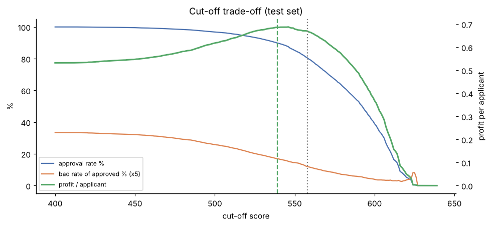
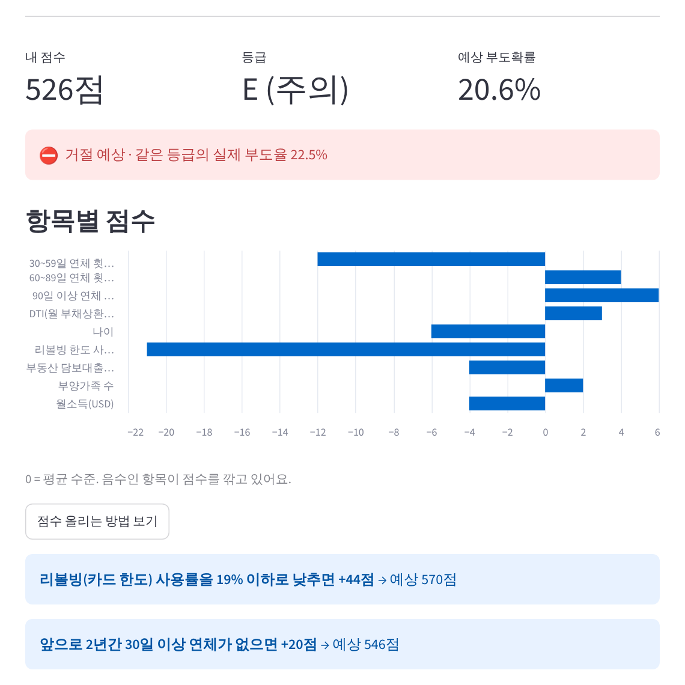
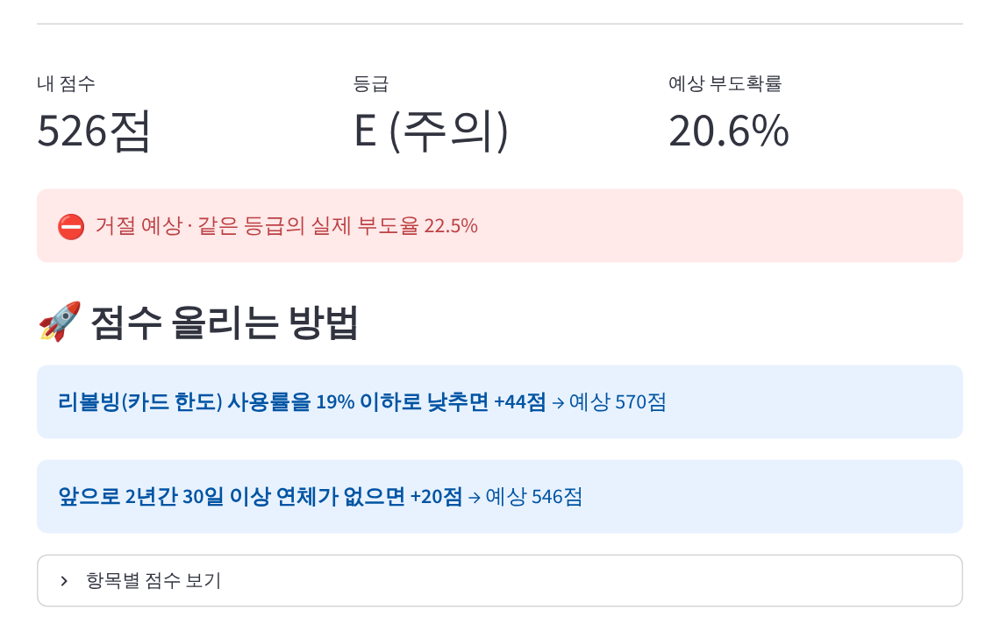
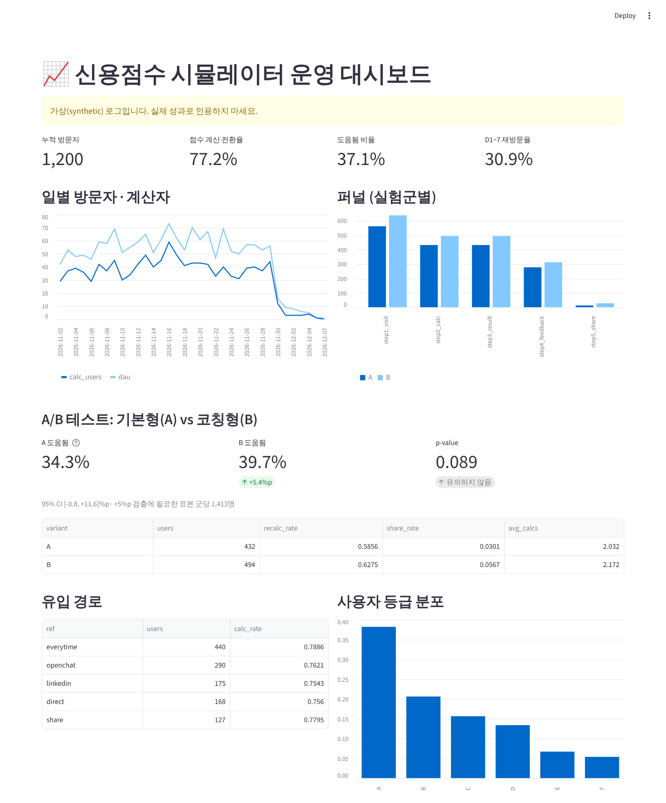

| 작성일 | 2026.10.30 | 작성자 | (이름) | 기간 | 2026.10.30 ~ 12.4 (5주) | 상태 | 1단계 완료 · 앱 동작 검증 완료 |
| 핵심 질문 | 세부 내용 | 산출물 |
|---|---|---|
| Q1. 누가 부도를 내는가 | 변수별 위험 구간 파악, 예측력(IV) 평가, 데이터 품질 이슈 처리 | EDA·변수 분석 노트북 |
| Q2. 위험을 어떻게 점수화하는가 | WoE 로지스틱 스코어카드(운영)와 LightGBM(비교) 구축, AUC·KS·PSI 검증 | 점수표(scorecard.json) |
| Q3. 몇 점부터 승인하는가 | 기준점별 승인율·부도율·손익 산출, 손실 구조 민감도 분석 | 승인 정책 권고안 |
| Q4. 사용자에게 어떻게 전달하는가 | 점수·등급·개선 방법을 보여주는 시뮬레이터 배포, 로그 기반 개선 | 웹 앱, 운영 대시보드 |
범위 외: 실제 대출 심사 적용, 국내 신용평가사(KCB·NICE) 점수 재현, 거절자 성과 추정(Reject Inference)
| 데이터셋 | 내용 | 규모 | 용도 |
|---|---|---|---|
| Give Me Some Credit Kaggle, 2011 | 미국 개인 대출자의 2년 내 90일 이상 연체 여부, 소득·연체 이력·한도 사용률 등 10개 변수 | 150,000명 부도율 6.7% | 모델 학습·평가 |
| LendingClub LoanStats3a | 2007~2011년 P2P 대출 실적. 대출금액·금리 포함 | 40,347건 | 금액 기반 손익 재검증(후속) |
| UCI German Credit | 독일 은행 대출 신청자 20개 변수 | 1,000명 | 방법론 연습 |
| 단계 | 방법 | 설계 의도 |
|---|---|---|
| 구간화 | 의사결정나무로 변수별 최대 6개 구간 도출, 결측·특수코드는 별도 구간 | 이상치 무력화, 비선형 관계 반영 |
| WoE · IV | 구간별 WoE = ln(정상 비중 / 부도 비중), IV 0.02 미만 변수 제외 | 변수 예측력의 정량 비교 |
| 로지스틱 회귀 | WoE 입력. 계수 부호가 직관과 반대인 변수는 제거 후 재학습(1개 제거, 최종 9개) | 설명 가능한 점수표 보장 |
| 점수 스케일링 | 600점 = 정상:부도 50:1, 20점마다 odds 2배(PDO 20) | 업계 표준 점수 체계 |
| 비교 모델 | LightGBM, 검증셋 기준 조기 종료 | 성능 상한 확인(챌린저 모델) |
| 검증 설계 | 학습·검증·테스트 60/20/20 층화 분할. 기준점은 검증셋에서 선택하고, 성과는 테스트셋에서 측정함 | 테스트셋 과적합 방지 |
| 정책 | 승인율 | 부도율 | 1인당 손익 |
|---|---|---|---|
| 전원 승인 | 100% | 6.7% | 0.532 |
| 80% 정책 (558점↑) | 80.4% | 2.4% | 0.670 (+26%) |
| 손익 최대 (539점↑) | 89.9% | 3.4% | 0.686 (+29%) |
손익 가정: 정상 승인 +1, 부도 승인 −6(마진 10%, 손실률 60%), 거절 0
| AUC | 80% 시 승인된 부도자 | |
|---|---|---|
| 스코어카드 | 0.858 | 577명 |
| LightGBM | 0.869 | 537명 (−40) |

기준점별 승인율·부도율·손익 (녹색 점선: 손익 최대, 회색 점선: 승인율 80%)
| 구분 | 지표 |
|---|---|
| 획득 | 방문자 수, 유입 경로별 전환율(?ref=) |
| 활성 | 방문 → 계산 전환율 |
| 만족(1차) | 결과 조회자 중 "도움됐어요" 비율 |
| 참여 | 재계산률, 공유율 |
| 유지 | D1 · D1~7 재방문율 |
| 항목 | 내용 |
|---|---|
| 가설 | 점수 설명보다 "점수 올리는 방법"을 먼저 보여주면 사용자가 결과를 더 유용하다고 느낌 |
| 실험군 | A(기본형): 항목별 점수 차트 중심, 개선 팁은 버튼 클릭 시 노출 / B(코칭형): 개선 팁 우선 노출, 차트는 접힘 |
| 배정 | 익명 ID 해시 기반 50:50. 재방문해도 같은 군에 배정됨 |
| 판정 | 두 비율 z-검정, 유의수준 5%. 기준 35%에서 +5%p 검출(검정력 80%)에 군당 약 1,400명이 필요함. 미달 시 판정을 보류하고 기간을 연장함 |
| 업무 | W1 10/30~ | W2 11/6~ | W3 11/13~ | W4 11/20~ | W5 11/27~ | 상태 |
|---|---|---|---|---|---|---|
| 데이터 수집·검증, 스코어카드·기준점 분석 | 완료 | |||||
| 앱 개발, 로그·분석 SQL·대시보드 | 완료 | |||||
| GitHub 공개, Supabase 연결, Streamlit 배포 | 진행 예정 | |||||
| 채널별 홍보 (에브리타임·오픈카톡·링크드인) | 예정 | |||||
| A/B 테스트 운영, 주간 지표 점검 | 예정 | |||||
| 결과 분석, 개선 1건 배포, 블로그·이력서 반영 | 예정 |
W1의 연한 막대: 1단계 결과 블로그 초안 작성. 취업 지원은 W2부터 병행함.
| 리스크 | 대응 방안 |
|---|---|
| 사용자 수 부족 (A/B 표본 미달) | 채널별 링크로 유입 효율을 점검해 성과 좋은 채널에 집중함. 미달 시 효과가 큰 지표로 재설계하고 판정을 보류함 |
| 손익 가정의 불확실성 | 손실/이익 비율 3~15배 민감도 분석을 이미 수행함. LendingClub의 실제 금액 데이터로 재검증할 예정임 |
| 미국 데이터와 국내 사용자 간 차이 | "학습용 모델"임을 앱에 명시하고, 소득은 고정 환율로 환산함. 국내 데이터(신용정보원 CreDB)는 후속 과제로 검토함 |
| 일부 구간 점수의 비직관성 | DTI·소득 구간에 단조성 제약을 적용한 binning으로 개선함(후속 과제) |
| 서비스 장애 및 로그 유실 | 로깅 실패가 서비스를 중단시키지 않게 예외 처리함. 로그는 외부 DB에 저장함. 사전 검증에서 DB 드라이버 불일치로 로그가 조용히 누락되는 문제를 발견해 수정함(부록 A) |
| 항목 | 내용 |
|---|---|
| 검증일 · 환경 | 2026.10.30 · 로컬 서버에서 Streamlit 앱 실행, 배포 환경과 같은 PostgreSQL 16에 연결, Chromium 브라우저로 실제 클릭 |
| 시나리오 | 사용자 2명(A군·B군)이 카드 사용률 95%, 30일 연체 1회를 입력하고 점수 계산 → 결과 확인 → 개선 팁 열기 → 피드백 → 공유 |
| 확인 항목 | 결과 | 판정 |
|---|---|---|
| 점수 계산 정확성 | 앱 결과 526점, 점수표 손계산(41+50+66+68+56+58+65+58+64)과 일치함 | 정상 |
| 등급 · 승인 판정 | E등급(주의), 거절 예상, 예상 부도확률 20.6%. 정책 기준(539점 미만 거절)과 일치함 | 정상 |
| A/B 배정 | 익명 ID 해시로 A군·B군이 분리되고, 군별 화면이 설계대로 노출됨(아래 화면) | 정상 |
| 이벤트 로깅 | 방문·계산·결과·팁 열기·피드백·공유 14건이 PostgreSQL에 기록됨. 유입 경로 저장, 입력 원본 미저장 확인 | 정상 (수정 후) |
| 로그 분석 | 분석 스크립트가 PostgreSQL에서 직접 퍼널·A/B 지표를 집계함. 대시보드 정상 표시 | 정상 |


주간 점검에 쓰는 대시보드임. KPI(방문자·전환율·도움됨 비율·재방문율), 일별 추이, 실험군별 퍼널, A/B 검정 결과(p-value·신뢰구간·필요 표본), 유입 경로, 사용자 등급 분포를 한 화면에서 확인함.

※ 위 수치는 쿼리·화면 검증용 가상 로그(1,200명)로 생성한 것이며 실제 성과가 아님. 실제 운영 결과는 배포 후 수집한 로그로 대체할 예정임. 가상 데이터에서도 +5.4%p 차이가 유의하지 않게 나와(p=0.089), 군당 약 1,400명의 표본 확보가 필요함을 사전에 확인함.